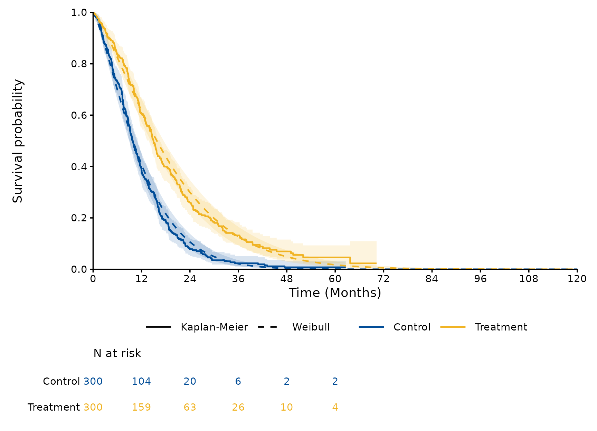
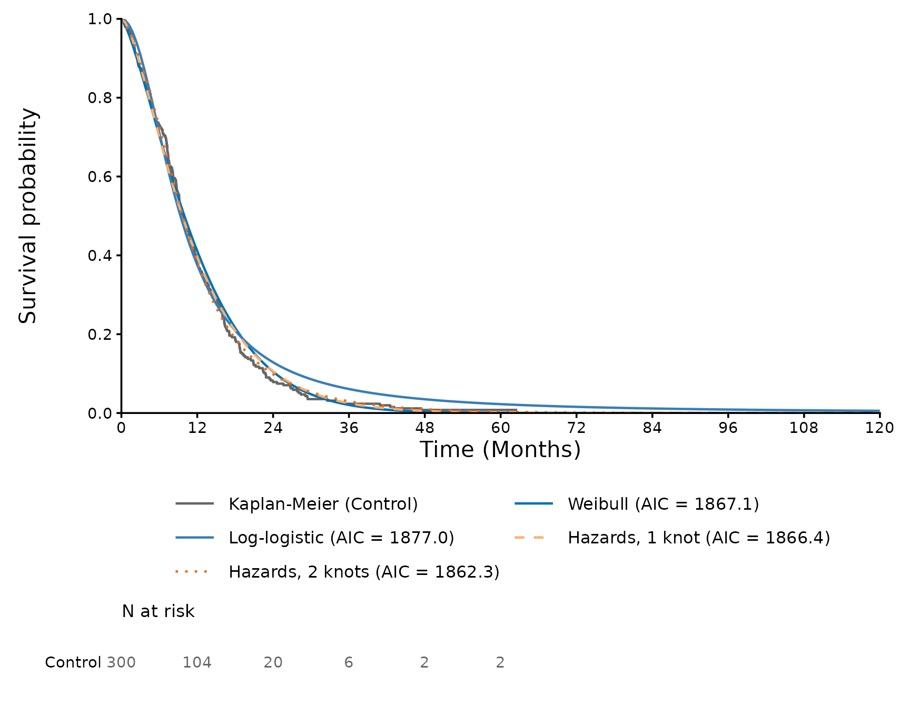

library(SurvFitSummary)
dat <- processing_dataset(
system.file("extdata", "fit_example.csv", package = "SurvFitSummary"),
column_arm = "TRT01P", column_survtime = "AVAL", column_cnsr = "CNSR",
control_arm = "Control"
)
f2 <- function(x) sprintf("%.2f", x)
f3 <- function(x) sprintf("%.3f", x)This vignette describes the models of
fit_survival_models() and the tables derived from them. The
data are those of
vignette("SurvFitSummary", package = "SurvFitSummary").
Distributions
The parametric models are fitted with
flexsurv::flexsurvreg(), with the parameters of flexsurv.
The default is the seven standard models of NICE DSU Technical Support
Document 14 (marked with *).
| Code | Model | Parameters (natural scale) | Location parameter |
|---|---|---|---|
"exp" * |
Exponential | rate | rate |
"weibull" * |
Weibull (accelerated failure time form) | shape, scale | scale |
"weibullPH" |
Weibull (proportional hazards form) | shape, scale | scale |
"rayleigh" |
Rayleigh (Weibull with shape 2) | scale | scale |
"lnorm" * |
Lognormal | meanlog, sdlog | meanlog |
"llogis" * |
Log-logistic | shape, scale | scale |
"gompertz" * |
Gompertz | shape, rate | rate |
"gamma" * |
Gamma | shape, rate | rate |
"gengamma" * |
Generalized gamma (Prentice 1974) | mu, sigma, Q | mu |
"gengamma.orig" |
Generalized gamma (Stacy 1962) | shape, scale, k | scale |
"genf" |
Generalized F (Prentice 1975) | mu, sigma, Q, P | mu |
"genf.orig" |
Generalized F (original form) | mu, sigma, s1, s2 | mu |
The spline models of Royston and Parmar (2002) are fitted with
flexsurv::flexsurvspline(). They model the log cumulative
hazard (scale "hazard"), the log cumulative odds
("odds") or the probit of the survival
("normal") as a natural cubic spline of log time with
parameters gamma0, gamma1, …; without internal
knots they reduce to the Weibull, log-logistic and lognormal models. The
boundary knots are the smallest and largest log event times, and the
internal knots are by default at equally spaced quantiles of the log
event times.
Independent and dependent fits
Each arm is fitted separately
(fit_type = "independent"), and the arms are fitted
together with the arm as a covariate of the location parameter on its
transformed scale (fit_type = "dependent", labelled
"Both arms"); for the spline models the arm shifts
gamma0.
fits <- fit_survival_models(dat, distributions = c("weibull", "llogis"),
spline_scales = "hazard", spline_knots = 1:2)
par <- parameter_table(fits)
par[par$fit_type == "dependent" & par$model == "Weibull", ]
#> fit_type arm model parameter scale est lcl
#> 45 dependent Both arms Weibull shape natural 1.3232955 1.2391598
#> 46 dependent Both arms Weibull scale natural 13.0430475 11.8996408
#> 47 dependent Both arms Weibull ARMTreatment natural 0.4687628 0.3373236
#> 48 dependent Both arms Weibull shape transformed 0.2801252 0.2144336
#> 49 dependent Both arms Weibull scale transformed 2.5682552 2.4765082
#> 50 dependent Both arms Weibull ARMTreatment transformed 0.4687628 0.3373236
#> ucl se
#> 45 1.4131438 0.04435257
#> 46 14.2963213 0.61055241
#> 47 0.6002020 0.06706205
#> 48 0.3458168 0.03351675
#> 49 2.6600023 0.04681056
#> 50 0.6002020 0.06706205In the dependent Weibull model the treatment multiplies the scale, that is the time to any given survival, by exp(0.469) = 1.60 (95% CI 1.40 to 1.82). The natural scale is that of flexsurv; on the transformed scale the positive parameters are on the log scale, which is the scale of the covariance matrices and of the simulations below.
Knots of the spline models
spline_knot_table() gives the internal knots of each fit
with the number at risk and the Kaplan-Meier estimate at each knot,
which shows how much data supports each part of the spline.
spline_knot_table(fits)
#> fit_type arm n_knots knot quantile log_time time n_risk
#> 1 independent Control 1 1 0.5000000 2.243398 9.425300 145
#> 2 independent Control 2 1 0.3333333 1.969362 7.166100 191
#> 3 independent Control 2 2 0.6666667 2.542782 12.715000 97
#> 4 independent Treatment 1 1 0.5000000 2.587478 13.296201 147
#> 5 independent Treatment 2 1 0.3333333 2.288967 9.864741 190
#> 6 independent Treatment 2 2 0.6666667 2.861626 17.489943 100
#> 7 dependent Both arms 1 1 0.5000000 2.411520 11.150900 292
#> 8 dependent Both arms 2 1 0.3333333 2.085771 8.050800 382
#> 9 dependent Both arms 2 2 0.6666667 2.727997 15.302200 198
#> surv_est surv_se
#> 1 0.5205484 0.02978855
#> 2 0.6830815 0.02752297
#> 3 0.3557713 0.02876996
#> 4 0.5615273 0.03019978
#> 5 0.7134789 0.02717195
#> 6 0.4037366 0.03033069
#> 7 0.5421976 0.02118619
#> 8 0.6990478 0.01930597
#> 9 0.3808919 0.02090650Knots can also be given on the time scale, one vector per spline model; the vectors must have different numbers of knots, and the knots must lie between the smallest and largest event times of every fit.
fits_knots <- fit_survival_models(dat, distributions = NULL,
spline_scales = "odds",
knots = list(12, c(6, 18)))
gof_table(fits_knots)
#> fit_type arm model n events npars loglik AIC
#> 1 independent Control Odds, 2 knots 300 271 4 -925.9283 1859.857
#> 2 independent Control Odds, 1 knot 300 271 3 -927.2485 1860.497
#> 3 independent Treatment Odds, 1 knot 300 240 3 -943.8827 1893.765
#> 4 independent Treatment Odds, 2 knots 300 240 4 -943.9062 1895.812
#> 5 dependent Both arms Odds, 1 knot 600 511 4 -1873.7053 3755.411
#> 6 dependent Both arms Odds, 2 knots 600 511 5 -1873.6248 3757.250
#> BIC
#> 1 1874.672
#> 2 1871.608
#> 3 1904.877
#> 4 1910.628
#> 5 3772.998
#> 6 3779.234Covariance matrices and Cholesky factors
The covariance matrix of the estimates and its lower triangular Cholesky factor L, with L L’ equal to the covariance matrix, are given on the transformed and natural scales. A probabilistic sensitivity analysis draws parameter vectors as the estimate plus L z, with z standard normal, on the transformed scale.
covariance_table(fits, scale = "transformed")[1:4, ]
#> fit_type arm model scale row col value
#> 1 independent Control Weibull transformed shape shape 0.0020457891
#> 2 independent Control Weibull transformed shape scale 0.0005688729
#> 3 independent Control Weibull transformed scale shape 0.0005688729
#> 4 independent Control Weibull transformed scale scale 0.0022048687
chol <- covariance_table(fits, type = "cholesky", scale = "transformed")
rows <- chol$fit_type == "independent" & chol$arm == "Control" &
chol$model == "Weibull"
L <- matrix(chol$value[rows], nrow = 2, byrow = TRUE,
dimnames = list(unique(chol$row[rows]), unique(chol$col[rows])))
L
#> shape scale
#> shape 0.04523040 0.00000000
#> scale 0.01257722 0.04524027
est <- par[par$fit_type == "independent" & par$arm == "Control" &
par$model == "Weibull" & par$scale == "transformed", ]
mu <- est$est[match(rownames(L), est$parameter)]
set.seed(1)
draws <- mu + L %*% matrix(stats::rnorm(2 * 10000), nrow = 2)
# Natural scale: shape and scale
summary(t(exp(draws)))
#> shape scale
#> Min. :1.152 Min. :10.72
#> 1st Qu.:1.301 1st Qu.:12.69
#> Median :1.341 Median :13.09
#> Mean :1.343 Mean :13.11
#> 3rd Qu.:1.384 3rd Qu.:13.51
#> Max. :1.595 Max. :15.62The variances of the 10000 draws, 2.085 and 2.184 (times 1000), reproduce those of the covariance matrix, 2.046 and 2.205.
Predictions with confidence intervals
predict_survival() gives the survival, the hazard or the
cumulative hazard of each model. With conf_int = TRUE the
confidence limits are the quantiles of the predictions for
n_sim parameter vectors drawn from the asymptotic normal
distribution of the estimates; the seed is set for each model and arm,
so that the limits do not depend on the other models, and the random
number generator of the session is left unchanged.
pred <- predict_survival(fits, times = c(12, 60), conf_int = TRUE)
pred[pred$fit_type == "independent" & pred$arm == "Control", ]
#> fit_type arm model time est lcl
#> 1 independent Control Weibull 12 0.4109409831 3.650270e-01
#> 2 independent Control Weibull 60 0.0004441375 8.700272e-05
#> 3 independent Control Log-logistic 12 0.3757980221 3.283578e-01
#> 4 independent Control Log-logistic 60 0.0225047906 1.464361e-02
#> 5 independent Control Hazards, 1 knot 12 0.3953930753 3.450085e-01
#> 6 independent Control Hazards, 1 knot 60 0.0010588679 1.517155e-04
#> 7 independent Control Hazards, 2 knots 12 0.3819794299 3.323450e-01
#> 8 independent Control Hazards, 2 knots 60 0.0032387340 4.723562e-04
#> ucl km
#> 1 0.457718923 0.385418910
#> 2 0.001781766 0.007842201
#> 3 0.425490508 0.385418910
#> 4 0.034205032 0.007842201
#> 5 0.446406431 0.385418910
#> 6 0.004622649 0.007842201
#> 7 0.436677584 0.385418910
#> 8 0.012702213 0.007842201The Weibull model of the control arm predicts a survival of 0.000 at
5 years (95% CI 0.000 to 0.002). survival_summary() gives
the median, the mean and the restricted mean survival up to a time
horizon.
survival_summary(fits, time_horizon = 60)
#> fit_type arm model median median_lcl median_ucl
#> 1 independent Control Weibull 9.967365 NA NA
#> 2 independent Control Log-logistic 9.343595 NA NA
#> 3 independent Control Hazards, 1 knot 9.650366 NA NA
#> 4 independent Control Hazards, 2 knots 9.712365 NA NA
#> 5 independent Treatment Weibull 15.677837 NA NA
#> 6 independent Treatment Log-logistic 14.573687 NA NA
#> 7 independent Treatment Hazards, 1 knot 15.253530 NA NA
#> 8 independent Treatment Hazards, 2 knots 14.910509 NA NA
#> 9 dependent Control Weibull 9.887639 NA NA
#> 10 dependent Treatment Weibull 15.800605 NA NA
#> 11 dependent Control Log-logistic 9.333603 NA NA
#> 12 dependent Treatment Log-logistic 14.559850 NA NA
#> 13 dependent Control Hazards, 1 knot 9.658265 NA NA
#> 14 dependent Treatment Hazards, 1 knot 15.211906 NA NA
#> 15 dependent Control Hazards, 2 knots 9.956673 NA NA
#> 16 dependent Treatment Hazards, 2 knots 14.586327 NA NA
#> mean mean_lcl mean_ucl rmst rmst_lcl rmst_ucl
#> 1 12.02017 NA NA 12.01768 NA NA
#> 2 14.47807 NA NA 13.14450 NA NA
#> 3 12.00392 NA NA 11.99644 NA NA
#> 4 12.04455 NA NA 12.00869 NA NA
#> 5 19.19071 NA NA 18.98189 NA NA
#> 6 24.49935 NA NA 19.81651 NA NA
#> 7 19.27185 NA NA 18.96520 NA NA
#> 8 19.77750 NA NA 18.93399 NA NA
#> 9 12.00441 NA NA 12.00129 NA NA
#> 10 19.18324 NA NA 18.99793 NA NA
#> 11 15.01128 NA NA 13.37056 NA NA
#> 12 23.41668 NA NA 19.54864 NA NA
#> 13 11.99880 NA NA 11.99062 NA NA
#> 14 19.28333 NA NA 18.96689 NA NA
#> 15 12.01427 NA NA 11.97809 NA NA
#> 16 19.86130 NA NA 18.96952 NA NA
plot_survival_fits(fits, models = "Weibull", fit_type = "dependent",
conf_int = TRUE, time_horizon = 120)
Comparing the models
gof_table() gives the log-likelihood, AIC and BIC of
each model, sorted by AIC within each fit; the number of patients is
used for the BIC. The fit statistics compare the models within the
follow-up only, so that the plausibility of the extrapolation is judged
separately, for example from the hazard functions and from external
data.
gof_table(fits)
#> fit_type arm model n events npars loglik AIC
#> 1 independent Control Hazards, 2 knots 300 271 4 -927.1436 1862.287
#> 2 independent Control Hazards, 1 knot 300 271 3 -930.1778 1866.356
#> 3 independent Control Weibull 300 271 2 -931.5666 1867.133
#> 4 independent Control Log-logistic 300 271 2 -936.5067 1877.013
#> 5 independent Treatment Hazards, 2 knots 300 240 4 -943.4353 1894.871
#> 6 independent Treatment Weibull 300 240 2 -948.2785 1900.557
#> 7 independent Treatment Hazards, 1 knot 300 240 3 -947.5741 1901.148
#> 8 independent Treatment Log-logistic 300 240 2 -950.0985 1904.197
#> 9 dependent Both arms Hazards, 2 knots 600 511 5 -1870.6875 3751.375
#> 10 dependent Both arms Hazards, 1 knot 600 511 4 -1877.6487 3763.297
#> 11 dependent Both arms Weibull 600 511 3 -1879.9570 3765.914
#> 12 dependent Both arms Log-logistic 600 511 3 -1887.1406 3780.281
#> BIC
#> 1 1877.102
#> 2 1877.467
#> 3 1874.541
#> 4 1884.421
#> 5 1909.686
#> 6 1907.965
#> 7 1912.260
#> 8 1911.605
#> 9 3773.360
#> 10 3780.885
#> 11 3779.105
#> 12 3793.472Models that fail
A model that fails or warns does not stop the others: its status
("ok", "warning" or "error") and
message are kept in fits$models, printed by
print(), written to the sheet “Model status” of the
workbook and listed in the report.
fits$models[, c("fit_type", "arm", "model", "status", "message")]
#> fit_type arm model status message
#> 1 independent Control Weibull ok <NA>
#> 2 independent Control Log-logistic ok <NA>
#> 3 independent Control Hazards, 1 knot ok <NA>
#> 4 independent Control Hazards, 2 knots ok <NA>
#> 5 independent Treatment Weibull ok <NA>
#> 6 independent Treatment Log-logistic ok <NA>
#> 7 independent Treatment Hazards, 1 knot ok <NA>
#> 8 independent Treatment Hazards, 2 knots ok <NA>
#> 9 dependent Both arms Weibull ok <NA>
#> 10 dependent Both arms Log-logistic ok <NA>
#> 11 dependent Both arms Hazards, 1 knot ok <NA>
#> 12 dependent Both arms Hazards, 2 knots ok <NA>The likelihood is maximised by stats::optim() (BFGS)
with the settings in control; the default tolerance
(reltol = 1e-10) is smaller than that of
optim(). flexsurv has no analytic gradient for the spline
models on the normal scale, for which the step of the numerical gradient
is ndeps = 1e-5 unless control sets it.
Colours, line types and text sizes of the plots
The plots take the colours and line types of the arms, curves or
elements they draw in colours and linetypes,
and font sizes in points in text_sizes. A named vector
changes the entries it names and the others keep their defaults; an
unnamed vector gives one value per entry, in the order of the legend.
For the fitted curves of one arm, the names are the labels of the models
and "Kaplan-Meier" (or
"Smoothed empirical hazard" in
plot_hazard_fits()).
plot_survival_fits(fits, arms = "Control", time_horizon = 120,
colours = c("Kaplan-Meier" = "grey40",
"Weibull" = "#009E73"),
linetypes = c("Hazards, 1 knot" = "dashed",
"Hazards, 2 knots" = "dotted"),
text_sizes = c(axis_title = 16, legend = 12))
References
Latimer NR (2011, updated 2013). NICE DSU Technical Support Document 14: Survival analysis for economic evaluations alongside clinical trials - extrapolation with patient-level data.
Royston P, Parmar MKB (2002). Flexible parametric proportional-hazards and proportional-odds models for censored survival data, with application to prognostic modelling and estimation of treatment effects. Statistics in Medicine 21(15):2175-2197.